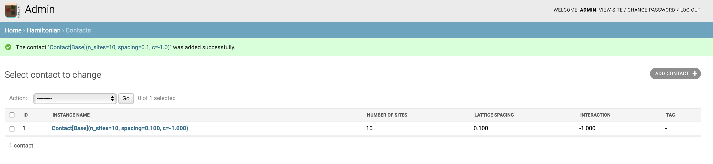

Adding data¶
This section shows you how to populate your database.
There are basically two options:
you can use the admin page to adjust entries.
you can write your own script to add data.
The admin page¶
To have access to the admin page, you should first create a super user. This is done by
$ python manage.py createsuperuser
Once you have done that, you can see the admin area after logging in: http://127.0.0.1:8000/login/. E.g., your menu bar should have two more links: Notifications: http://127.0.0.1:8000/notifications/ and admin: http://127.0.0.1:8000/admin/.
On the admin page, you see a summary of all your tables.
Particularly, on the contact hamiltonian admin: http://127.0.0.1:8000/admin/hamiltonian/contact/, you find an empty table.
To create an entry, click on add entry and fill out the forms and save.
E.g., after choosing n_sites=10, spacing=0.1 and c=-1.0, your table should look like this

Note
EspressoDB adds all models to the admin page by default.
If you do not want to have this behavior, you have to adjust my_project/hamiltonian/admin.py
Data scripts¶
Next we provide a script which adds missing data to the database.
To simplify this approach, EspressoDB provides population views which help you code up scripts with nested dependencies.
Since there is just one table without dependencies, the result is straight forward.
E.g., if you select Contact[Base], you will obtain
from my_project.hamiltonian.models import Contact as hamiltonian_Contact
hamiltonian_Contact.get_or_create(
n_sites=..., # Number of sites in one spatial dimension
spacing=..., # The lattice spacing between sites
c=..., # Interaction parameter of the Hamiltonian. Implements a contact interaction.
tag=..., # (Optional) User defined tag for easy searches
)
In principle, you can just fill out the blanks and run this script.
We want to modify this script a little bit to emphasize the logic and a potential use case.
To do so, create the script add_data.py in the project root directory.
from itertools import product
import numpy as np
from my_project.hamiltonian.models import Contact as ContactHamiltonian
RANGES = {
"spacing": np.linspace(0.1, 1.0, 10),
"n_sites": np.arange(10, 51, 5),
"c": [-1],
}
def main():
for values in product(*RANGES.values()):
spacing, n_sites, c = values
print(
"Start to compute eigenvalues for"
f" spacing={spacing}, n_sites={n_sites} and c={c}."
)
hamiltonian = ContactHamiltonian.objects.filter(
n_sites=n_sites, spacing=spacing, c=c
).first()
if not hamiltonian:
hamiltonian = ContactHamiltonian(n_sites=n_sites, spacing=spacing, c=c)
print(f" Creating table entry for {hamiltonian}")
hamiltonian.save()
if __name__ == "__main__":
main()
With
ContactHamiltonian.objects.filter(n_sites=n_sites, spacing=spacing, c=c)
we ask the database for all entries which fulfill the above criteria.
Since we have implenented a unique constrained, the returned queryset consists of either one or zero objects.
With the first() method we therefore receive a ContactHamiltonian instance or None.
If we do not have an entry in the database, we want to create one. First we want to create a Python instance.
hamiltonian = ContactHamiltonian(n_sites=n_sites, spacing=spacing, c=c)
This does not touch the database. Only if we call save, the entry is inserted.
hamiltonian.save()
If this entry was present, this would raise an error because of the unique constrained.
Note
Django also provides a shortcut for this procedure with ContactHamiltonian.objects.get_or_create
where an instance and a boolean is returned. The boolean is true whenever an entry was created.
Once you run this script, you will populate your database
$ python add_data.py
Start to compute eigenvalues for spacing=0.1, n_sites=10 and c=-1.
Start to compute eigenvalues for spacing=0.1, n_sites=15 and c=-1.
Creating table entry for Contact[Base](n_sites=15, spacing=0.1, c=-1)
...
Because the first entry was already added by hand, it is skipped. The rest will be inserted accordingly. Now, you should be able to see 90 entries on the admin page.